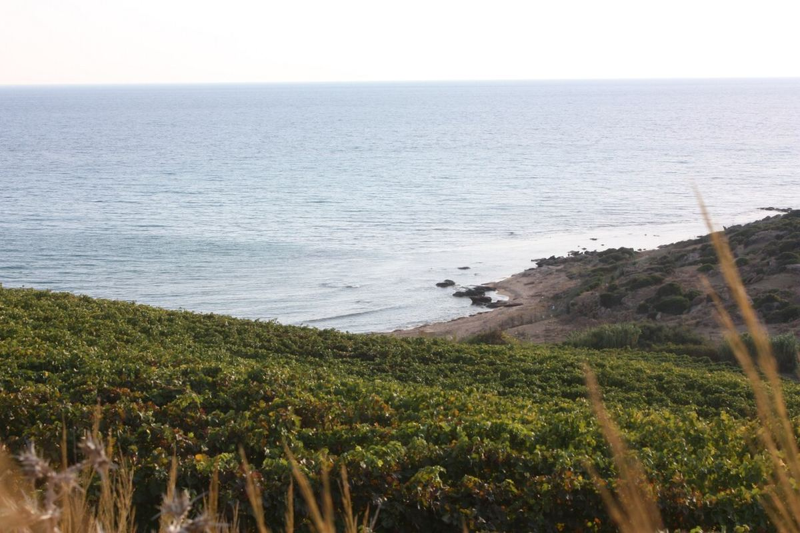
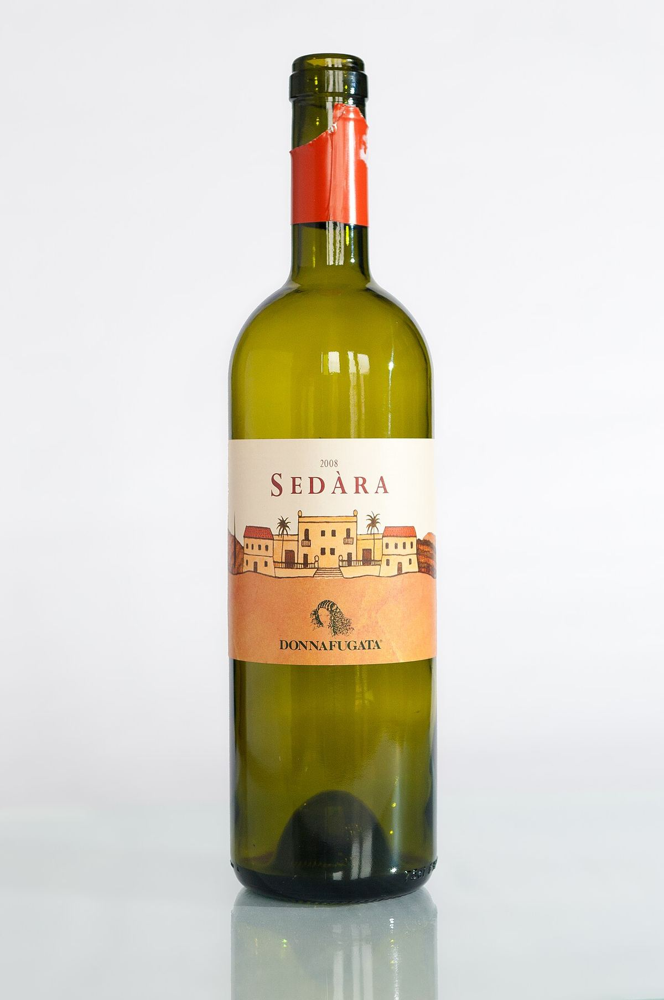

TINTO
Sicilia, la mayor isla del Mediterráneo, tiene una de las mayores superficies de viñedo de Italia. Produce desde tintos de Nero d'Avola y los vinos volcánicos del Etna hasta el generoso Marsala y los dulces de Pantelleria y las islas Eolias.

La vid se cultiva en Sicilia desde la Antigüedad, y los colonos griegos que fundaron ciudades en la isla difundieron sus técnicas de cultivo y elaboración. A lo largo de los siglos fenicios, romanos, árabes, normandos y españoles dejaron su huella en la agricultura de la isla. En 1773 el comerciante inglés John Woodhouse comenzó a enviar a Inglaterra vino de la zona de Marsala reforzado con alcohol, y en el siglo XIX casas como Ingham y Florio convirtieron el Marsala en un vino conocido internacionalmente. Durante buena parte del siglo XX la isla produjo sobre todo vino a granel, a menudo destinado a reforzar vinos de otras regiones. Desde finales de los años ochenta y noventa, una nueva generación de bodegas ha impulsado los vinos embotellados de variedades autóctonas, y en 2011 se creó la DOC Sicilia, que abarca toda la isla.
El clima es mediterráneo, con veranos cálidos y secos, inviernos suaves y abundante insolación; los vientos, como el siroco, y la sequedad del aire reducen la presión de las enfermedades de la vid. Las diferencias son, sin embargo, notables: la altitud de las zonas interiores y de las laderas del Etna, así como la influencia del mar en la costa, crean condiciones muy diversas. La isla incluye además archipiélagos con tradición vinícola propia, como las Eolias y Pantelleria.
Hay calizas, arcillas y arenas en buena parte de la isla, suelos calcáreos blancos en el sudeste y en la zona de Marsala, y suelos volcánicos en el Etna, las Eolias y Pantelleria.
La Nero d'Avola es la tinta más difundida y da vinos de color intenso y fruta madura. La Nerello Mascalese es la protagonista del Etna, y la Frappato, ligera y aromática, se combina con la Nero d'Avola en el Cerasuolo di Vittoria, la única DOCG de la isla. Entre las blancas destacan la Catarratto, la Grillo, la Inzolia, la Grecanico y, en el Etna, la Carricante. La Zibibbo, nombre local de la Moscatel de Alejandría, da en Pantelleria el Moscato y el Passito di Pantelleria; el cultivo tradicional de la vid en vaso bajo de esta isla fue inscrito por la UNESCO en 2014 en la lista del Patrimonio Cultural Inmaterial. En las Eolias se elabora la Malvasia delle Lipari. También se cultivan variedades internacionales como la Syrah y la Chardonnay.
Además de la DOC Sicilia y de la IGT Terre Siciliane, destacan la DOCG Cerasuolo di Vittoria y las DOC Etna, Marsala, Pantelleria, Malvasia delle Lipari, Faro y Vittoria, entre otras.


